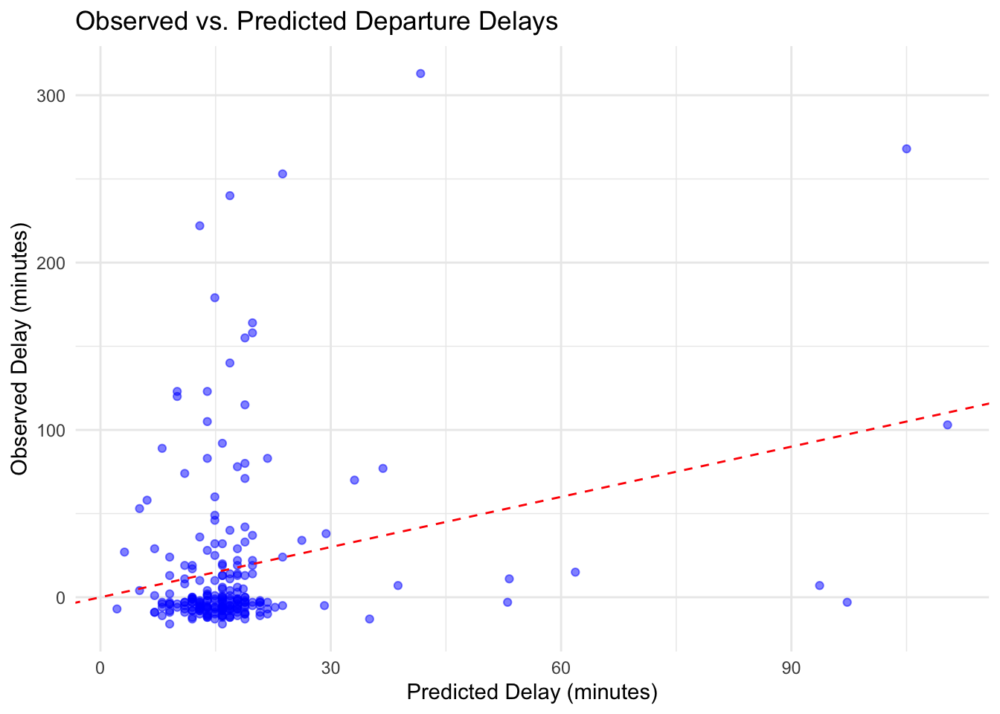
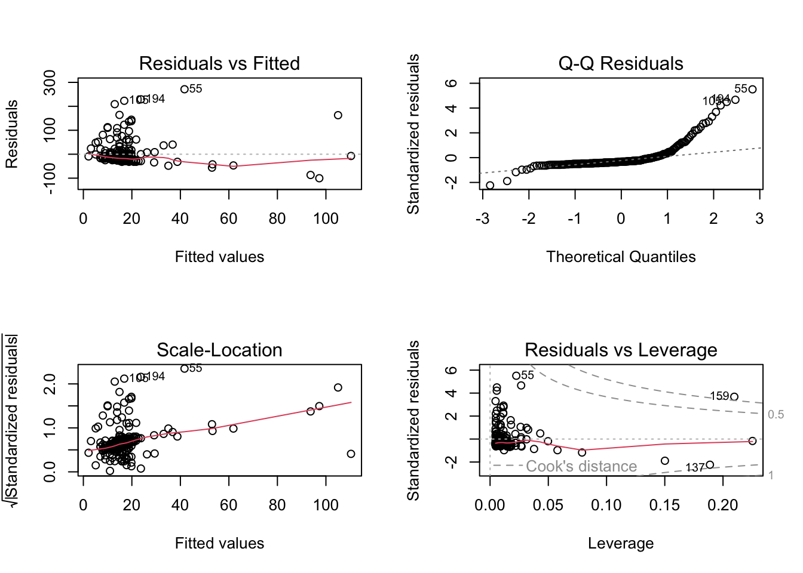
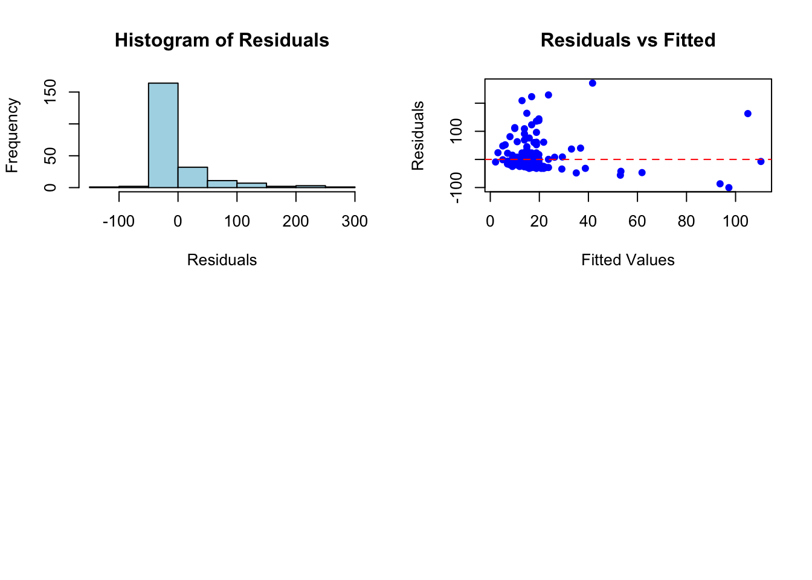

This analysis explores the factors influencing departure delays for flights, using regression models to evaluate the impact of predictors such as wind speed, visibility, temperature, and precipitation. Several models were compared based on Akaike Information Criterion (AIC) and variance explained (R²). The final model identified visibility and wind speed as significant predictors, though the overall variation explained by these factors is limited, suggesting other unmeasured variables may play a larger role.
Introduction
Regression analysis is a critical tool in understanding relationships between variables. This activity examines factors affecting departure delays for ExpressJet Airlines flights from JFK. Using the nycflights13 dataset and weather data, we:
Explore and prepare the data.
Perform linear regression analysis using lm().
Evaluate model fit using residuals and diagnostics.
Select the best model using AIC.
Data Preparation
We begin by summarizing the flights and weather datasets to understand their structure and content.
# Summarize flights datasummary( flights)
year month day dep_time sched_dep_time
Min. :2013 Min. : 1.000 Min. : 1.00 Min. : 1 Min. : 106
1st Qu.:2013 1st Qu.: 4.000 1st Qu.: 8.00 1st Qu.: 907 1st Qu.: 906
Median :2013 Median : 7.000 Median :16.00 Median :1401 Median :1359
Mean :2013 Mean : 6.549 Mean :15.71 Mean :1349 Mean :1344
3rd Qu.:2013 3rd Qu.:10.000 3rd Qu.:23.00 3rd Qu.:1744 3rd Qu.:1729
Max. :2013 Max. :12.000 Max. :31.00 Max. :2400 Max. :2359
NA's :8255
dep_delay arr_time sched_arr_time arr_delay
Min. : -43.00 Min. : 1 Min. : 1 Min. : -86.000
1st Qu.: -5.00 1st Qu.:1104 1st Qu.:1124 1st Qu.: -17.000
Median : -2.00 Median :1535 Median :1556 Median : -5.000
Mean : 12.64 Mean :1502 Mean :1536 Mean : 6.895
3rd Qu.: 11.00 3rd Qu.:1940 3rd Qu.:1945 3rd Qu.: 14.000
Max. :1301.00 Max. :2400 Max. :2359 Max. :1272.000
NA's :8255 NA's :8713 NA's :9430
carrier flight tailnum origin
Length:336776 Min. : 1 Length:336776 Length:336776
Class :character 1st Qu.: 553 Class :character Class :character
Mode :character Median :1496 Mode :character Mode :character
Mean :1972
3rd Qu.:3465
Max. :8500
dest air_time distance hour
Length:336776 Min. : 20.0 Min. : 17 Min. : 1.00
Class :character 1st Qu.: 82.0 1st Qu.: 502 1st Qu.: 9.00
Mode :character Median :129.0 Median : 872 Median :13.00
Mean :150.7 Mean :1040 Mean :13.18
3rd Qu.:192.0 3rd Qu.:1389 3rd Qu.:17.00
Max. :695.0 Max. :4983 Max. :23.00
NA's :9430
minute time_hour
Min. : 0.00 Min. :2013-01-01 05:00:00.00
1st Qu.: 8.00 1st Qu.:2013-04-04 13:00:00.00
Median :29.00 Median :2013-07-03 10:00:00.00
Mean :26.23 Mean :2013-07-03 05:22:54.64
3rd Qu.:44.00 3rd Qu.:2013-10-01 07:00:00.00
Max. :59.00 Max. :2013-12-31 23:00:00.00
Data Summary - flights
The dataset provides details on flights departing from NYC airports in 2013. Key observations include:
Date Information:
Flights span the entire year, with consistent coverage across months.
Departure and Arrival Times:
Departure times (dep_time) range from midnight to midnight, with some missing values. Scheduled departure times (sched_dep_time) are evenly distributed, averaging 13:44 (early afternoon).
Delays:
Departure delays range from -43 to 1301 minutes, with an average of 12.6 minutes, though most were slightly ahead of schedule (median: -2 minutes).
Arrival delays range from -86 to 1272 minutes, averaging 6.9 minutes (median: -5 minutes), indicating frequent early arrivals.
Flight Characteristics:
Flights range from 20 minutes to 11.6 hours, averaging 150.7 minutes (~2.5 hours), and cover distances from 17 to 4983 miles, with an average of 1040 miles.
Missing Data:
Variables like dep_time, arr_time, and air_time have missing values, which need consideration during analysis.
# Summarize weather datasummary( weather )
origin year month day
Length:26115 Min. :2013 Min. : 1.000 Min. : 1.00
Class :character 1st Qu.:2013 1st Qu.: 4.000 1st Qu.: 8.00
Mode :character Median :2013 Median : 7.000 Median :16.00
Mean :2013 Mean : 6.504 Mean :15.68
3rd Qu.:2013 3rd Qu.: 9.000 3rd Qu.:23.00
Max. :2013 Max. :12.000 Max. :31.00
hour temp dewp humid
Min. : 0.00 Min. : 10.94 Min. :-9.94 Min. : 12.74
1st Qu.: 6.00 1st Qu.: 39.92 1st Qu.:26.06 1st Qu.: 47.05
Median :11.00 Median : 55.40 Median :42.08 Median : 61.79
Mean :11.49 Mean : 55.26 Mean :41.44 Mean : 62.53
3rd Qu.:17.00 3rd Qu.: 69.98 3rd Qu.:57.92 3rd Qu.: 78.79
Max. :23.00 Max. :100.04 Max. :78.08 Max. :100.00
NA's :1 NA's :1 NA's :1
wind_dir wind_speed wind_gust precip
Min. : 0.0 Min. : 0.000 Min. :16.11 Min. :0.000000
1st Qu.:120.0 1st Qu.: 6.905 1st Qu.:20.71 1st Qu.:0.000000
Median :220.0 Median : 10.357 Median :24.17 Median :0.000000
Mean :199.8 Mean : 10.518 Mean :25.49 Mean :0.004469
3rd Qu.:290.0 3rd Qu.: 13.809 3rd Qu.:28.77 3rd Qu.:0.000000
Max. :360.0 Max. :1048.361 Max. :66.75 Max. :1.210000
NA's :460 NA's :4 NA's :20778
pressure visib time_hour
Min. : 983.8 Min. : 0.000 Min. :2013-01-01 01:00:00.0
1st Qu.:1012.9 1st Qu.:10.000 1st Qu.:2013-04-01 21:30:00.0
Median :1017.6 Median :10.000 Median :2013-07-01 14:00:00.0
Mean :1017.9 Mean : 9.255 Mean :2013-07-01 18:26:37.7
3rd Qu.:1023.0 3rd Qu.:10.000 3rd Qu.:2013-09-30 13:00:00.0
Max. :1042.1 Max. :10.000 Max. :2013-12-30 18:00:00.0
NA's :2729
Data Summary - weather
The dataset includes weather data for 2013, providing details on various environmental conditions:
Date and Time Information:
Observations cover the full year 2013, with hourly records ranging from midnight (0:00) to 11 PM (23:00).
Temperature and Humidity:
Temperature ranges from 10.94°F to 100.04°F, with an average of 55.26°F.
Dew Point values range from -9.94°F to 78.08°F, averaging 41.44°F.
Humidity spans from 12.74% to 100%, with a mean of 62.53%.
Wind Conditions:
Wind Direction ranges from 0° to 360° (all compass directions), while Wind Speed averages 10.52 mph, with maximum gusts reaching 1048.36 mph.
Missing Data: Wind gust values are missing for 20,778 observations, and wind direction has 460 missing values.
Precipitation and Visibility:
Precipitation is minimal, with most observations at 0.0 inches and a maximum of 1.21 inches.
Visibility averages 9.26 miles, with most observations at the maximum of 10 miles.
Pressure:
Atmospheric pressure ranges from 983.8 hPa to 1042.1 hPa, averaging 1017.9 hPa.
Missing Data:
Variables with missing values include wind gust, pressure (2729 missing), and visibility.
Filter and Prepare Flight Data
We filter the dataset for flights from JFK on ExpressJet Airlines and create a synthetic key (DateTime) for joining with weather data.
DateTime Departure Delay Departure Time
Length:1408 Min. :-19.00 Min. : 559
Class :character 1st Qu.: -6.00 1st Qu.: 959
Mode :character Median : -2.00 Median :1355
Mean : 18.52 Mean :1237
3rd Qu.: 16.00 3rd Qu.:1900
Max. :536.00 Max. :1945
NA's :82
Departure Interpretation
Departure Delays range from -19 minutes (early departures) to 536 minutes, with an average delay of 18.52 minutes. Most flights were slightly early or on time (median: -2 minutes).
Departure Times range from 5:59 AM to 7:45 PM, with an average scheduled time of 12:37 PM.
Missing Data: There are 82 missing values in the Departure Delay column.
Departure Delay Departure Time temp dewp
Min. :-16.00 Min. : 600 Min. :15.98 Min. :-7.96
1st Qu.: -6.50 1st Qu.: 959 1st Qu.:37.04 1st Qu.:13.46
Median : -2.00 Median :1359 Median :46.94 Median :26.06
Mean : 17.74 Mean :1282 Mean :48.29 Mean :28.25
3rd Qu.: 16.00 3rd Qu.:1428 3rd Qu.:59.00 3rd Qu.:41.00
Max. :313.00 Max. :1945 Max. :96.08 Max. :73.04
humid wind_dir wind_speed wind_gust
Min. :18.40 Min. : 10.0 Min. : 8.055 Min. :16.11
1st Qu.:35.77 1st Qu.:235.0 1st Qu.:14.960 1st Qu.:23.02
Median :43.67 Median :300.0 Median :18.412 Median :26.47
Mean :48.19 Mean :255.8 Mean :18.541 Mean :26.97
3rd Qu.:55.36 3rd Qu.:320.0 3rd Qu.:21.865 3rd Qu.:29.92
Max. :93.57 Max. :360.0 Max. :33.373 Max. :46.03
precip pressure visib
Min. :0.0000000 Min. : 994.2 Min. : 0.250
1st Qu.:0.0000000 1st Qu.:1011.3 1st Qu.:10.000
Median :0.0000000 Median :1015.9 Median :10.000
Mean :0.0007623 Mean :1016.3 Mean : 9.692
3rd Qu.:0.0000000 3rd Qu.:1021.2 3rd Qu.:10.000
Max. :0.0500000 Max. :1038.0 Max. :10.000
Exploratory Data Analysis
Exploratory analysis helps understand relationships between variables
Question of Interest:
What features of this data set may impact the departure delay for flights coming out of JFK on ExpressJet Airlines?
# Fit modelsmodel_temp <-lm(`Departure Delay`~ temp, data = df_clean)model_wind <-lm(`Departure Delay`~ wind_speed, data = df_clean)model_percip <-lm(`Departure Delay`~ precip, data = df_clean)model_visib <-lm(`Departure Delay`~ visib, data = df_clean)model_temp_wind <-lm(`Departure Delay`~ temp + wind_speed, data = df_clean)model_temp_time <-lm(`Departure Delay`~ temp + precip, data = df_clean)model_temp_visib <-lm(`Departure Delay`~ temp + visib, data = df_clean)model_wind_time <-lm(`Departure Delay`~ wind_speed + precip, data = df_clean)model_wind_visib <-lm(`Departure Delay`~ wind_speed + visib, data = df_clean)model_time_visib <-lm(`Departure Delay`~ precip + visib, data = df_clean)model_combined <-lm(`Departure Delay`~ temp + wind_speed + precip + visib, data = df_clean)# List all modelsmodels <-list("Temp + Wind"=lm(`Departure Delay`~ temp + wind_speed, data = df_clean),"Temp + Time"=lm(`Departure Delay`~ temp + precip, data = df_clean),"Temp + Visib"=lm(`Departure Delay`~ temp + visib, data = df_clean),"Wind + Time"=lm(`Departure Delay`~ wind_speed + precip, data = df_clean),"Wind + Visib"=lm(`Departure Delay`~ wind_speed + visib, data = df_clean),"Time + Visib"=lm(`Departure Delay`~ precip + visib, data = df_clean),"Temp + Wind + Time"=lm(`Departure Delay`~ temp + wind_speed + precip, data = df_clean),"Temp + Wind + Visib"=lm(`Departure Delay`~ temp + wind_speed + visib, data = df_clean),"Temp + Time + Visib"=lm(`Departure Delay`~ temp + precip + visib, data = df_clean),"Wind + Time + Visib"=lm(`Departure Delay`~ wind_speed + precip + visib, data = df_clean),"Full Model"=lm(`Departure Delay`~ temp + wind_speed + precip + visib, data = df_clean))# Compare models with AICmodel_comparison <-data.frame(Model =names(models),AIC =sapply(models, AIC),R2 =sapply(models, function(x) summary(x)$r.squared))# Rank models by AICmodel_comparison <- model_comparison %>%arrange(AIC) %>%mutate(delta_AIC = AIC -min(AIC))# Print the comparison tableprint(model_comparison)
Model AIC R2 delta_AIC
Wind + Visib Wind + Visib 2380.776 0.068032769 0.000000
Time + Visib Time + Visib 2382.024 0.062802486 1.247997
Temp + Visib Temp + Visib 2382.059 0.062654221 1.283273
Wind + Time + Visib Wind + Time + Visib 2382.581 0.068848099 1.804823
Temp + Wind + Visib Temp + Wind + Visib 2382.766 0.068072616 1.990465
Temp + Time + Visib Temp + Time + Visib 2383.861 0.063487321 3.084985
Full Model Full Model 2384.574 0.068876673 3.797980
Wind + Time Wind + Time 2393.674 0.012539693 12.898018
Temp + Time Temp + Time 2394.413 0.009262668 13.636850
Temp + Wind + Time Temp + Wind + Time 2395.636 0.012710191 14.859511
Temp + Wind Temp + Wind 2395.655 0.003729671 14.878779
# Add predictions to the datasetdf_clean$Predicted <-predict(best_model, newdata = df_clean)# Plot observed vs. predicted valuesggplot(df_clean, aes(x = Predicted, y =`Departure Delay`)) +geom_point(alpha =0.5, color ="blue") +geom_abline(slope =1, intercept =0, color ="red", linetype ="dashed") +labs(title ="Observed vs. Predicted Departure Delays",x ="Predicted Delay (minutes)",y ="Observed Delay (minutes)" ) +theme_minimal()

# Residual diagnostic plotspar(mfrow =c(2, 2)) # Arrange in a 2x2 gridplot(best_model)

# Histogram of residualshist(residuals(best_model), main ="Histogram of Residuals", xlab ="Residuals", col ="lightblue")# Residuals vs. Fitted scatter plotplot(fitted(best_model), residuals(best_model),main ="Residuals vs Fitted",xlab ="Fitted Values", ylab ="Residuals", col ="blue", pch =16) +abline(h =0, col ="red", lty =2)
integer(0)

1. Best Model: Wind + Visib
AIC: 2380.776 (lowest AIC in the table, making it the best model).
R2R^2R2: 0.068 (6.8% of variance in Departure Delay is explained by the model).
ΔAICΔAIC: 0.000 (indicates this is the baseline for comparison).
Interpretation: Wind + Visib is the most parsimonious model (lowest AIC), balancing goodness of fit and simplicity. This model explains 6.8% of the variation in departure delays using only Wind Speed and Visibility.
2. Competing Models
Models with ΔAIC≤2 2ΔAIC≤2 are considered statistically comparable to the best model:
Time + Visib (ΔAIC=1.25 = 1.25ΔAIC=1.25):
AIC: 2382.024
R2R^2R2: 0.063 (6.3% of variance explained).
Interpretation: Replacing Wind Speed with Time slightly worsens the fit, though this model is still competitive.
Temp + Visib (ΔAIC=1.28 = 1.28ΔAIC=1.28):
AIC: 2382.059
R2R^2R2: 0.063 (6.3% of variance explained).
Interpretation: Substituting Temp for Wind Speed also results in a slightly inferior fit but remains comparable.
Wind + Time + Visib (ΔAIC=1.80 = 1.80ΔAIC=1.80):
AIC: 2382.581
R2R^2R2: 0.068 (6.9% of variance explained).
Interpretation: Adding Time to the Wind + Visib model marginally improves R2R^2R2, but the increase in complexity is not justified by the negligible gain.
3. Full Model
AIC: 2384.574 (ΔAIC=3.80 = 3.80ΔAIC=3.80).
R2R^2R2: 0.069 (6.9% of variance explained).
Interpretation: While the Full Model explains the highest variance, the increase in AIC suggests it overfits the data compared to simpler models like Wind + Visib.
4. Poor Models (ΔAIC>10 > 10ΔAIC>10)
Models like Wind + Time (ΔAIC=12.90 = 12.90ΔAIC=12.90) and Temp + Wind (ΔAIC=14.88 = 14.88ΔAIC=14.88) perform poorly.
R2R^2R2 values for these models are extremely low (e.g., 1.2% or less), indicating they fail to explain meaningful variation in Departure Delay.
Interpretation: These models should be discarded as they add unnecessary complexity without improving explanatory power.
5. General Observations
Parsimonious Model: The Wind + Visib model achieves the best balance between simplicity and performance.
Variance Explained:
All models explain a small portion of the variance in Departure Delay (R2R^2R2 values range from 0.003 to 0.069). This suggests that external, unmeasured factors likely have a more significant impact on delays.
Effect of Adding Predictors:
Adding predictors (e.g., Time or Temp) slightly improves R2R^2R2, but the complexity is penalized by higher AIC values.
Conclusion
Best Model: Wind + Visib (lowest AIC, reasonable R2R^2R2).
Model Insights: Wind Speed and Visibility are the most relevant predictors of Departure Delay, though their combined effect is modest (R2=6.8%R^2 = 6.8%R2=6.8%).
Recommendation: Use the Wind + Visib model for interpretation and predictions, as it balances simplicity and effectiveness without unnecessary complexity.
Source Code
---title: "Regression Homework Activity"author: "Ethan Pisterman"date: ""project: output-dir: docsformat: html: code-tools: true toc: true self-contained: false abstract: "This analysis explores the factors influencing departure delays for flights, using regression models to evaluate the impact of predictors such as wind speed, visibility, temperature, and precipitation. Several models were compared based on Akaike Information Criterion (AIC) and variance explained (R²). The final model identified visibility and wind speed as significant predictors, though the overall variation explained by these factors is limited, suggesting other unmeasured variables may play a larger role."---```{r setup, include=FALSE}# Load necessary librarieslibrary( tidyverse )library( nycflights13 )library(car)library(broom)library(dplyr)library(knitr)library(ggplot2)library(purrr)```# **Introduction**Regression analysis is a critical tool in understanding relationships between variables. This activity examines factors affecting departure delays for ExpressJet Airlines flights from JFK. Using the `nycflights13` dataset and weather data, we:- Explore and prepare the data.- Perform linear regression analysis using `lm()`.- Evaluate model fit using residuals and diagnostics.- Select the best model using AIC.# **Data Preparation**We begin by summarizing the `flights` and `weather` datasets to understand their structure and content.```{r}# Summarize flights datasummary( flights)```### **Data Summary - flights**The dataset provides details on flights departing from NYC airports in 2013. Key observations include:#### **Date Information:**- Flights span the entire year, with consistent coverage across months.#### **Departure and Arrival Times:**- Departure times (`dep_time`) range from midnight to midnight, with some missing values. Scheduled departure times (`sched_dep_time`) are evenly distributed, averaging 13:44 (early afternoon).- **Delays**: - Departure delays range from -43 to 1301 minutes, with an average of **12.6 minutes**, though most were slightly ahead of schedule (median: -2 minutes). - Arrival delays range from -86 to 1272 minutes, averaging **6.9 minutes** (median: -5 minutes), indicating frequent early arrivals.#### **Flight Characteristics:**- Flights range from 20 minutes to 11.6 hours, averaging **150.7 minutes** (\~2.5 hours), and cover distances from 17 to 4983 miles, with an average of **1040 miles**.#### **Missing Data:**- Variables like `dep_time`, `arr_time`, and `air_time` have missing values, which need consideration during analysis.```{r}# Summarize weather datasummary( weather )```### **Data Summary - weather**The dataset includes weather data for 2013, providing details on various environmental conditions:#### **Date and Time Information:**- Observations cover the full year 2013, with hourly records ranging from midnight (0:00) to 11 PM (23:00).#### **Temperature and Humidity:**- **Temperature** ranges from 10.94°F to 100.04°F, with an average of **55.26°F**.- **Dew Point** values range from -9.94°F to 78.08°F, averaging **41.44°F**.- **Humidity** spans from 12.74% to 100%, with a mean of **62.53%**.#### **Wind Conditions:**- **Wind Direction** ranges from 0° to 360° (all compass directions), while **Wind Speed** averages **10.52 mph**, with maximum gusts reaching **1048.36 mph**.- **Missing Data**: Wind gust values are missing for 20,778 observations, and wind direction has 460 missing values.#### **Precipitation and Visibility:**- **Precipitation** is minimal, with most observations at 0.0 inches and a maximum of 1.21 inches.- **Visibility** averages **9.26 miles**, with most observations at the maximum of 10 miles.#### **Pressure:**- Atmospheric pressure ranges from **983.8 hPa** to **1042.1 hPa**, averaging **1017.9 hPa**.#### **Missing Data:**- Variables with missing values include wind gust, pressure (2729 missing), and visibility.### **Filter and Prepare Flight Data**We filter the dataset for flights from JFK on ExpressJet Airlines and create a synthetic key (`DateTime`) for joining with weather data.```{r}flights %>%filter( origin =="JFK", carrier =="EV") %>%mutate( DateTime =paste(month,day,hour, sep=".")) %>%select( DateTime, `Departure Delay`= dep_delay,`Departure Time`= sched_dep_time) %>%droplevels() -> df.jfk summary( df.jfk )```### **Departure Interpretation**- **Departure Delays** range from -19 minutes (early departures) to 536 minutes, with an average delay of **18.52 minutes**. Most flights were slightly early or on time (median: -2 minutes).- **Departure Times** range from 5:59 AM to 7:45 PM, with an average scheduled time of **12:37 PM**.- **Missing Data**: There are 82 missing values in the `Departure Delay` column.Now I'll do the same with the weather data.```{r}weather %>%filter( origin =="JFK") %>%mutate( DateTime =paste(month,day,hour, sep=".")) %>%select( -origin, -year, -month, -day, -hour, -time_hour ) -> df.weather summary( df.weather )```### **Weather Interpretation**This summary describes weather-related variables in a dataset. Here's what it indicates:- **Temperature (`temp`)**: - Ranges from **12.02°F** to **98.06°F**, with an average of **54.47°F**.- **Dew Point (`dewp`)**: - Measures atmospheric moisture, ranging from **-9.94°F** to **78.08°F**, averaging **41.86°F**.- **Humidity (`humid`)**: - Varies between **15.21%** and **100%**, with an average of **65.21%**.- **Wind Direction (`wind_dir`)**: - Represents the compass direction of the wind (0°--360°), with **51 missing values**.- **Wind Speed (`wind_speed`)**: - Averages **11.47 mph**, ranging from **0 mph** (calm conditions) to **42.58 mph**. - **Wind Gusts (`wind_gust`)**: Peaks at **66.75 mph**, with many missing values (**7199 entries**).- **Precipitation (`precip`)**: - Minimal overall, averaging **0.004 inches**, with a maximum of **0.66 inches**.- **Pressure (`pressure`)**: - Atmospheric pressure ranges from **985.7 hPa** to **1042.1 hPa**, averaging **1018.2 hPa**, with **831 missing values**.- **Visibility (`visib`)**: - Typically high, with most observations at the maximum of **10 miles** and an average of **9.18 miles**.- **Date and Time (`DateTime`)**: - Contains **8706 records**, representing timestamped weather observations.### **Merge Flight and Weather Data**We merge the two datasets using the `DateTime` key to form a single dataset for analysis.```{r}merge( df.jfk, df.weather, by="DateTime" ) %>%select( -DateTime ) -> dfdf_clean <- df %>%drop_na()summary(df_clean)```# **Exploratory Data Analysis**Exploratory analysis helps understand relationships between variablesQuestion of Interest:What features of this data set may impact the departure delay for flights coming out of JFK on *ExpressJet* Airlines?```{r}# Fit modelsmodel_temp <-lm(`Departure Delay`~ temp, data = df_clean)model_wind <-lm(`Departure Delay`~ wind_speed, data = df_clean)model_percip <-lm(`Departure Delay`~ precip, data = df_clean)model_visib <-lm(`Departure Delay`~ visib, data = df_clean)model_temp_wind <-lm(`Departure Delay`~ temp + wind_speed, data = df_clean)model_temp_time <-lm(`Departure Delay`~ temp + precip, data = df_clean)model_temp_visib <-lm(`Departure Delay`~ temp + visib, data = df_clean)model_wind_time <-lm(`Departure Delay`~ wind_speed + precip, data = df_clean)model_wind_visib <-lm(`Departure Delay`~ wind_speed + visib, data = df_clean)model_time_visib <-lm(`Departure Delay`~ precip + visib, data = df_clean)model_combined <-lm(`Departure Delay`~ temp + wind_speed + precip + visib, data = df_clean)# List all modelsmodels <-list("Temp + Wind"=lm(`Departure Delay`~ temp + wind_speed, data = df_clean),"Temp + Time"=lm(`Departure Delay`~ temp + precip, data = df_clean),"Temp + Visib"=lm(`Departure Delay`~ temp + visib, data = df_clean),"Wind + Time"=lm(`Departure Delay`~ wind_speed + precip, data = df_clean),"Wind + Visib"=lm(`Departure Delay`~ wind_speed + visib, data = df_clean),"Time + Visib"=lm(`Departure Delay`~ precip + visib, data = df_clean),"Temp + Wind + Time"=lm(`Departure Delay`~ temp + wind_speed + precip, data = df_clean),"Temp + Wind + Visib"=lm(`Departure Delay`~ temp + wind_speed + visib, data = df_clean),"Temp + Time + Visib"=lm(`Departure Delay`~ temp + precip + visib, data = df_clean),"Wind + Time + Visib"=lm(`Departure Delay`~ wind_speed + precip + visib, data = df_clean),"Full Model"=lm(`Departure Delay`~ temp + wind_speed + precip + visib, data = df_clean))# Compare models with AICmodel_comparison <-data.frame(Model =names(models),AIC =sapply(models, AIC),R2 =sapply(models, function(x) summary(x)$r.squared))# Rank models by AICmodel_comparison <- model_comparison %>%arrange(AIC) %>%mutate(delta_AIC = AIC -min(AIC))# Print the comparison tableprint(model_comparison)``````{r}best_model <- model_wind_visiblibrary(car)vif(model_wind_visib)# Add predictions to the datasetdf_clean$Predicted <-predict(best_model, newdata = df_clean)# Plot observed vs. predicted valuesggplot(df_clean, aes(x = Predicted, y =`Departure Delay`)) +geom_point(alpha =0.5, color ="blue") +geom_abline(slope =1, intercept =0, color ="red", linetype ="dashed") +labs(title ="Observed vs. Predicted Departure Delays",x ="Predicted Delay (minutes)",y ="Observed Delay (minutes)" ) +theme_minimal()# Residual diagnostic plotspar(mfrow =c(2, 2)) # Arrange in a 2x2 gridplot(best_model)# Histogram of residualshist(residuals(best_model), main ="Histogram of Residuals", xlab ="Residuals", col ="lightblue")# Residuals vs. Fitted scatter plotplot(fitted(best_model), residuals(best_model),main ="Residuals vs Fitted",xlab ="Fitted Values", ylab ="Residuals", col ="blue", pch =16) +abline(h =0, col ="red", lty =2)```### **1. Best Model: `Wind + Visib`**- **AIC**: 2380.776 (lowest AIC in the table, making it the best model).- R2R\^2R2: 0.068 (6.8% of variance in `Departure Delay` is explained by the model).- ΔAIC\Delta \text{AIC}ΔAIC: 0.000 (indicates this is the baseline for comparison).**Interpretation**:\`Wind + Visib` is the most parsimonious model (lowest AIC), balancing goodness of fit and simplicity. This model explains 6.8% of the variation in departure delays using only `Wind Speed` and `Visibility`.------------------------------------------------------------------------### **2. Competing Models**Models with ΔAIC≤2\Delta \text{AIC} \leq 2ΔAIC≤2 are considered statistically comparable to the best model:- **`Time + Visib` (**ΔAIC=1.25\Delta \text{AIC} = 1.25ΔAIC=1.25): - AIC: 2382.024 - R2R\^2R2: 0.063 (6.3% of variance explained). - **Interpretation**: Replacing `Wind Speed` with `Time` slightly worsens the fit, though this model is still competitive.- **`Temp + Visib` (**ΔAIC=1.28\Delta \text{AIC} = 1.28ΔAIC=1.28): - AIC: 2382.059 - R2R\^2R2: 0.063 (6.3% of variance explained). - **Interpretation**: Substituting `Temp` for `Wind Speed` also results in a slightly inferior fit but remains comparable.- **`Wind + Time + Visib` (**ΔAIC=1.80\Delta \text{AIC} = 1.80ΔAIC=1.80): - AIC: 2382.581 - R2R\^2R2: 0.068 (6.9% of variance explained). - **Interpretation**: Adding `Time` to the `Wind + Visib` model marginally improves R2R\^2R2, but the increase in complexity is not justified by the negligible gain.------------------------------------------------------------------------### **3. Full Model**- **AIC**: 2384.574 (ΔAIC=3.80\Delta \text{AIC} = 3.80ΔAIC=3.80).- R2R\^2R2: 0.069 (6.9% of variance explained).- **Interpretation**: While the `Full Model` explains the highest variance, the increase in AIC suggests it overfits the data compared to simpler models like `Wind + Visib`.------------------------------------------------------------------------### **4. Poor Models (**ΔAIC\>10\Delta \text{AIC} \> 10ΔAIC\>10)- Models like `Wind + Time` (ΔAIC=12.90\Delta \text{AIC} = 12.90ΔAIC=12.90) and `Temp + Wind` (ΔAIC=14.88\Delta \text{AIC} = 14.88ΔAIC=14.88) perform poorly.- R2R\^2R2 values for these models are extremely low (e.g., 1.2% or less), indicating they fail to explain meaningful variation in `Departure Delay`.- **Interpretation**: These models should be discarded as they add unnecessary complexity without improving explanatory power.------------------------------------------------------------------------### **5. General Observations**1. **Parsimonious Model**: The `Wind + Visib` model achieves the best balance between simplicity and performance.2. **Variance Explained**: - All models explain a small portion of the variance in `Departure Delay` (R2R\^2R2 values range from 0.003 to 0.069). This suggests that external, unmeasured factors likely have a more significant impact on delays.3. **Effect of Adding Predictors**: - Adding predictors (e.g., `Time` or `Temp`) slightly improves R2R\^2R2, but the complexity is penalized by higher AIC values.------------------------------------------------------------------------# **Conclusion**- **Best Model**: `Wind + Visib` (lowest AIC, reasonable R2R\^2R2).- **Model Insights**: `Wind Speed` and `Visibility` are the most relevant predictors of `Departure Delay`, though their combined effect is modest (R2=6.8%R\^2 = 6.8%R2=6.8%).- **Recommendation**: Use the `Wind + Visib` model for interpretation and predictions, as it balances simplicity and effectiveness without unnecessary complexity.